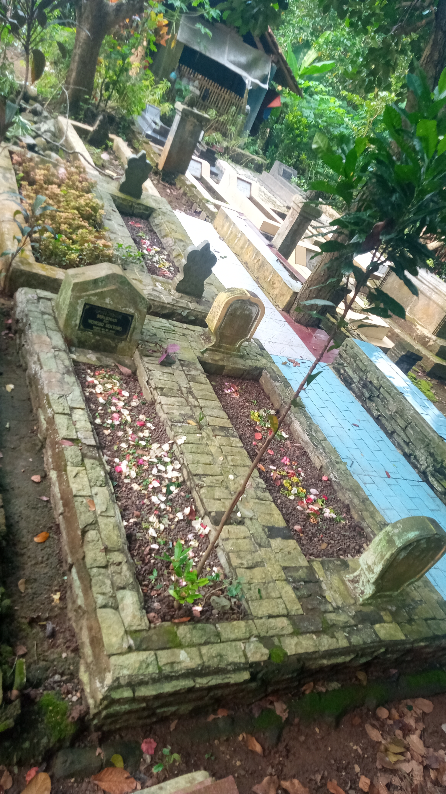
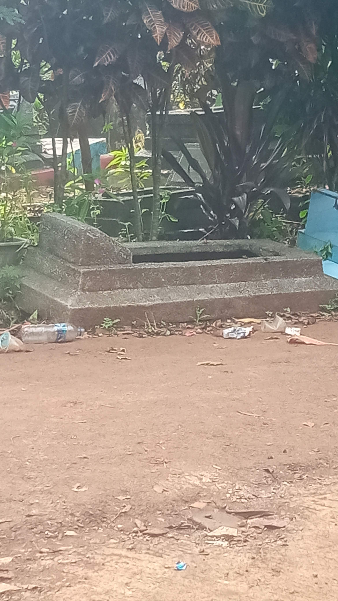

Galeri Lokasi
Dokumentasi keasrian dan tata kelola area pemakaman yang terjaga kebersihannya.

Area Makam Modern
Penataan batu nisan yang seragam dan rapi.

Perawatan Berkala
Kebersihan rumput dan tanaman selalu terjaga.

Suasana Asri
Lingkungan hijau yang memberikan ketenangan peziarah.

Akses Jalan Luas
Kemudahan akses dan parkir bagi para peziarah.